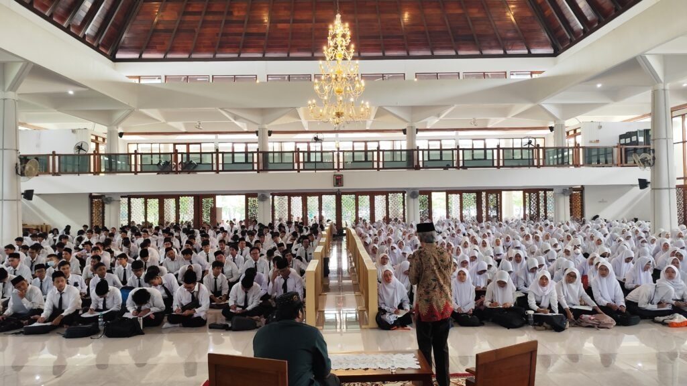

Suasana Kuliah Umum Mentoring Agama Islam Semester Genap 2024/2025
Kampus ITS, ITS News — Institut Teknologi Sepuluh Nopember (ITS) kembali menggelar Mentoring Agama Islam Semester Genap 2024/2025 dengan berbagai rangkaian kegiatan. Kegiatan ini bertujuan membentuk karakter mahasiswa baru (maba) muslim berbasis nilai-nilai Islam. Acara yang resmi dibuka dalam kuliah umum ini berlangsung di Masjid Manarul Ilmi ITS, Sabtu (22/02)
Dalam pembukaan acara, Ketua Tim Pembina Kerohanian Islam (TPKI) ITS Prof Dr Muhammad Mashuri MT menyampaikan bahwa mentoring merupakan sarana pencarian ilmu bagi mahasiswa. “Kegiatan mentoring ini untuk mempersiapkan generasi emas di 2045 yang perlu dibekali dengan segudang ilmu, termasuk keilmuan Islam,” ujarnya.